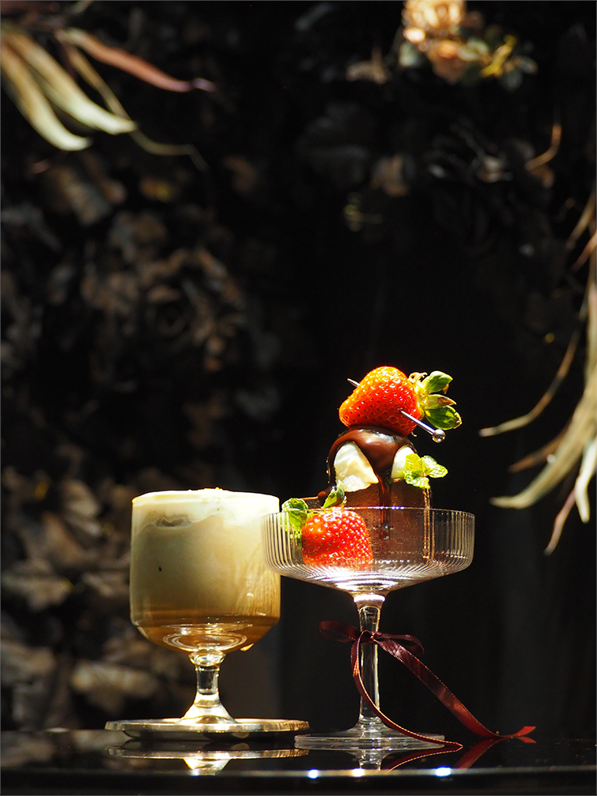
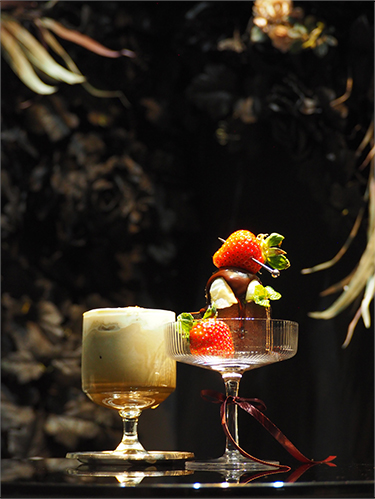
About
福岡県にあるカフェスイーツを紹介するWebサイトです。
近年、韓国などで流行しているカフェの特徴は内装やレイアウトにこだわり、コンセプトに沿ったものが多くあり、
その中でも"無機質"や”モノトーン”をコンセプトにしているカフェが増えてきています。
カフェの場所や価格層、雰囲気などがまとまってみれるものがないので、
カフェ好き、SNSを使っている若年層に向けて、カフェの情報が一貫して見れるように
このWebサイトを制作しました。
keno/Coelacanth
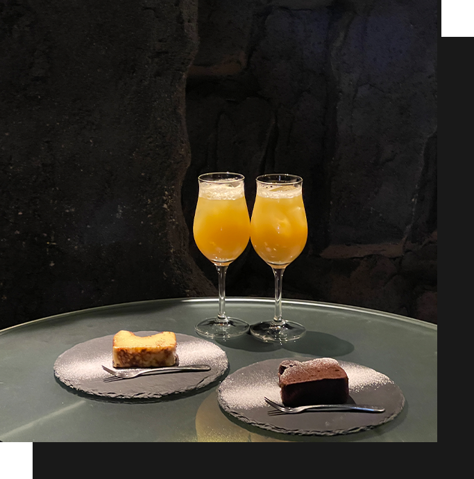
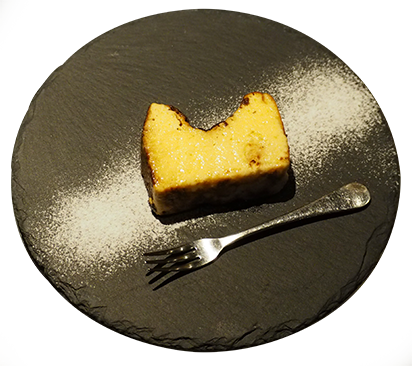
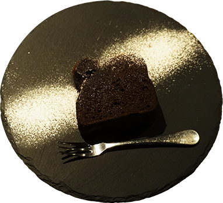
昼はカフェ、夜はBARといった2つの顔を持つお店
昼のカフェ、夜のバーといった二つの空間を持ち合わせている魅力的な場所です。
店内は海中の洞窟内のような装いで照明も薄暗く深海のようです。
アクセス:地下鉄天神駅から徒歩10分ほど
チーズケーキ ￥600
ガトーショコラ ￥600
📌〒810-0041
福岡県福岡市中央区大名1丁目13-20 松嶋ビル 1F
Guf
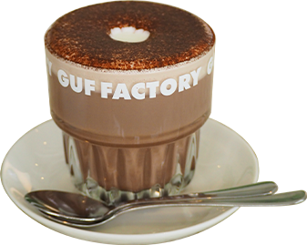
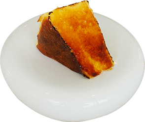
香椎駅徒歩5分にある水の机で有名な白いカフェ
水の机がとても綺麗でスイーツ映えします。メニューは簡素でデザートはバスクチーズのみで
プレーン、抹茶、チョコレート、ブリュレの全４種
アクセス:JR香椎駅から徒歩2〜3分ほど
バスクチーズケーキ ￥790
リングラテチョコ ￥750
📌〒813-0013
福岡県福岡市東区香椎駅前1丁目13-13
Gold Flog
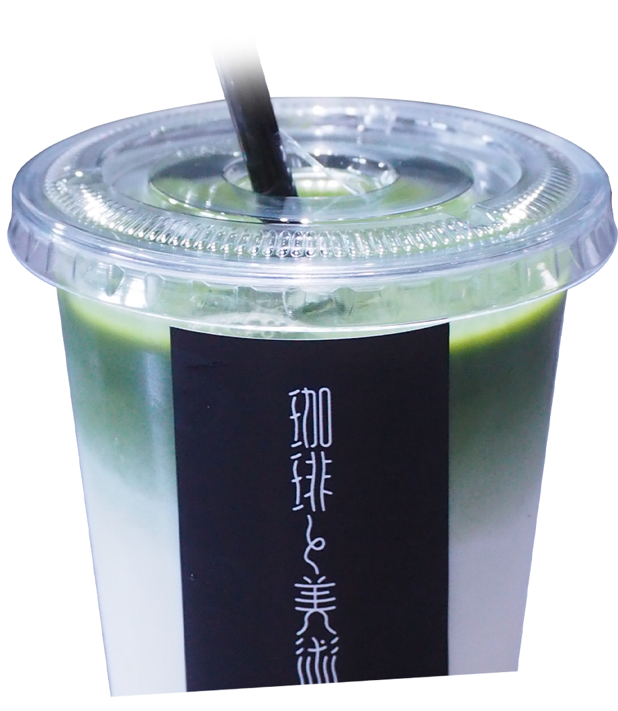
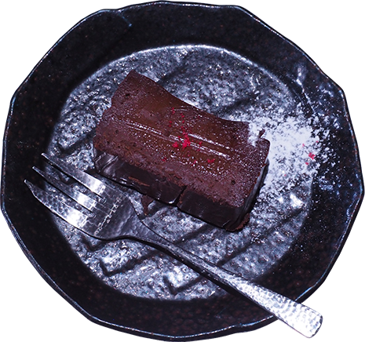
隠れ家のようにひっそりとある黒い建物
様々な絵画が展示されており、テナントを借りて展示も開催できます。
絵画を見ながらゆっくりとした時間がくつろげます。
アクセス:博多駅から徒歩13分ほど
抹茶ラテ(R) ￥700
チョコレートケーキ ￥550
📌〒812-0018
福岡県博多区住吉2丁目11-13-1
Black White
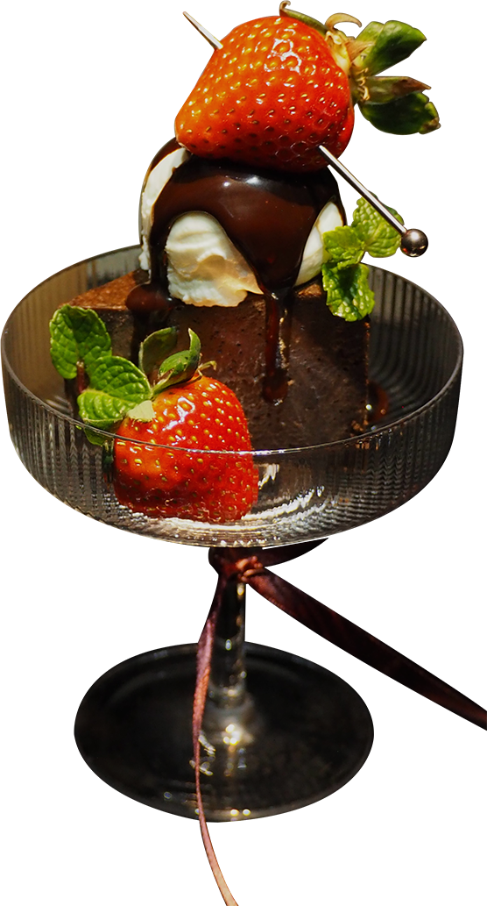
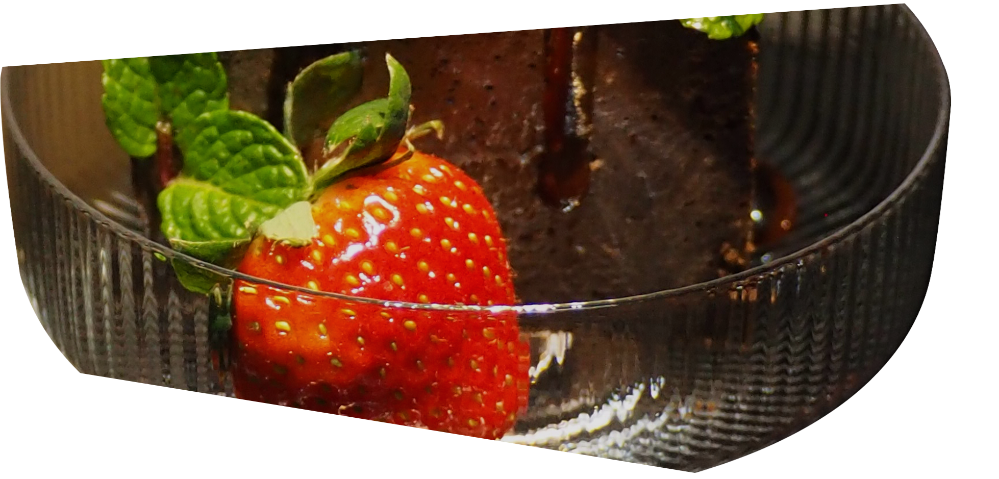
完全個室制度の斬新なカフェ
使いたい部屋ごとにチャージ料がかかりますが、写真映えするお部屋ばかり。
メニューも切り替わりがあるので飽きることなく来店するたびに楽しめます。
アクセス:博多駅から徒歩15分ほど
ほうじ茶ブリュレラテ ￥700
チョコレートケーキ ￥700
📌〒812-0011
福岡県福岡市博多区博多駅前4丁目33-2
Contact
必須氏名
必須電話番号
必須メールアドレス
必須お問い合わせ内容